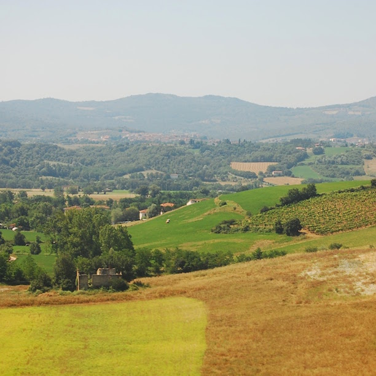
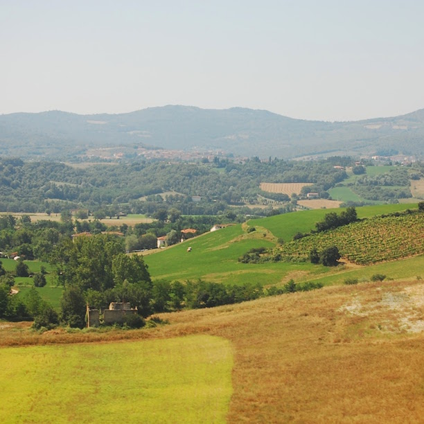

to add points
to custom polygon.
to custom polygon.
Custom shape
Round edges
The inset() shape optionally allows values
similar to border-radius for rounded edges.
This new feature may be buggy in
your browser.
clip-path: ;
 
